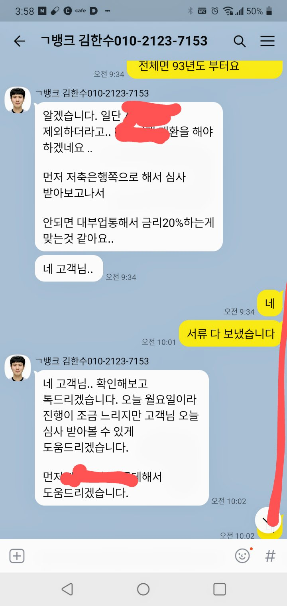
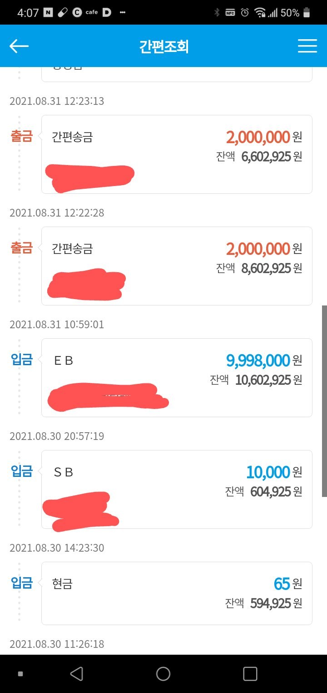
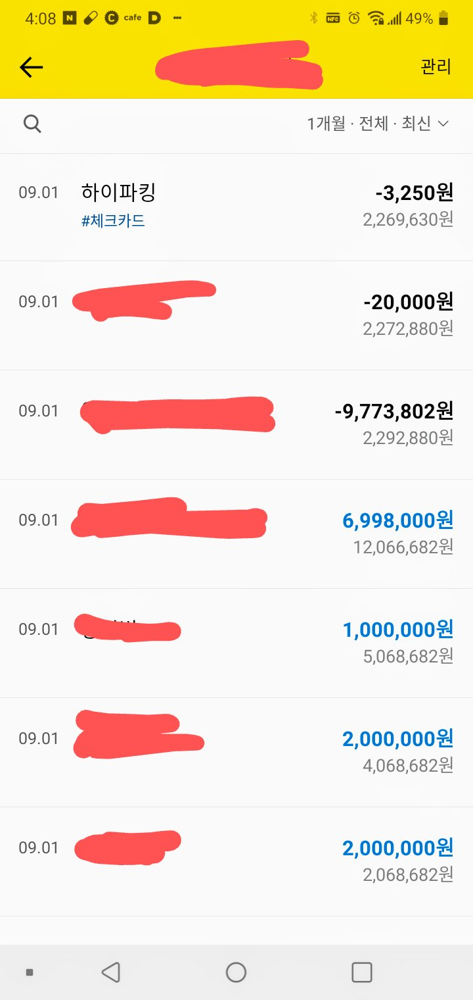

[개인회생자대출] 개인회생 면책 조건 대출 ( 김한수 상담사 대출 )
재직기간 6개월
기대출 대부업체1 1054만원 (20%)
대부업체2 982만원 (24%)
차량담보 대출 658만원 (24%)
총 기대출 약 2700만원
개인회생 면책날짜 6월 16일
지난번에도 다른데서는 대출이 안되었는데 김한수 상담사님이 여기 저기 알아봐
주셔서 대출 받아서 정말 요긴하게 썼는데 지난번에 면책되면 낮은 금리로 대환
하라고 알려 주셔서 이렇게 또 대환 대출을 받게 되었네요 정말 넘 감사합니다.
낮은 이자율로 해주실려고 저축은행 여기 저기 알아봐주셨는데 아쉽게도
연봉에 비해 기대출 비율이 높아서 저축은행에서는 대환대출이 안되었지만 그래도
24%에서 20% 금리로 대출을 받게 해주셔서 많은 도움이 되었습니다.
월요일이라 많이 바쁘신대도 신속하게 대출 받을수 있게
애써주셔서 넘 감사드리고 이번에도 6개월 후 채무관리 잘하셔서 금리 낮은대로 도움주시겠다고 하시네요
다시 한 번 넘 감사드립니다.


